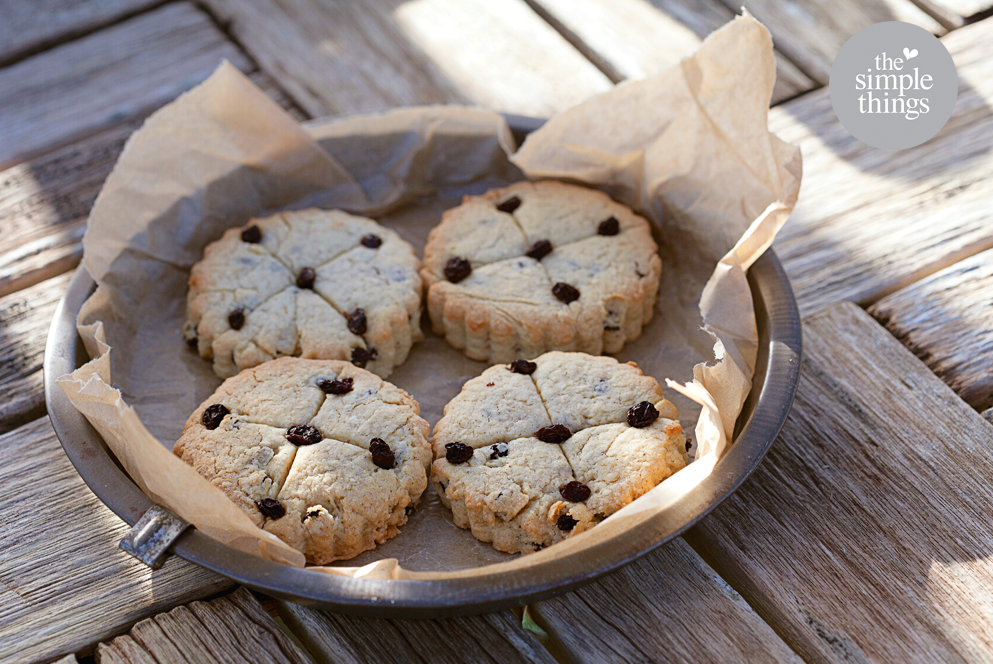

HAPPY HALLOWEEN
HAPPY HALLOWEEN Halloween
Soul Cakes
The American Halloween tradition of “trick-or-treating” probably dates back to the early All Souls’ Day parades in England. During the festivities, poor citizens would beg for food and families would give them pastries called “soul cakes” in return for their promise to pray for the family’s dead relatives. The distribution of soul cakes was encouraged by the church as a way to replace the ancient practice of leaving food and wine for roaming spirits. The practice, which was referred to as “going a-souling” was eventually taken up by children who would visit the houses in their neighborhood and be given ale, food and money. The tradition of dressing in costume for Halloween has both European and Celtic roots. Hundreds of years ago, winter was an uncertain and frightening time. Food supplies often ran low and, for the many people afraid of the dark, the short days of winter were full of constant worry. On Halloween, when it was believed that ghosts came back to the earthly world, people thought that they would encounter ghosts if they left their homes. To avoid being recognized by these ghosts, people would wear masks when they left their homes after dark so that the ghosts would mistake them for fellow spirits. On Halloween, to keep ghosts away from their houses, people would place bowls of food outside their homes to appease the ghosts and prevent them from attempting to enter.